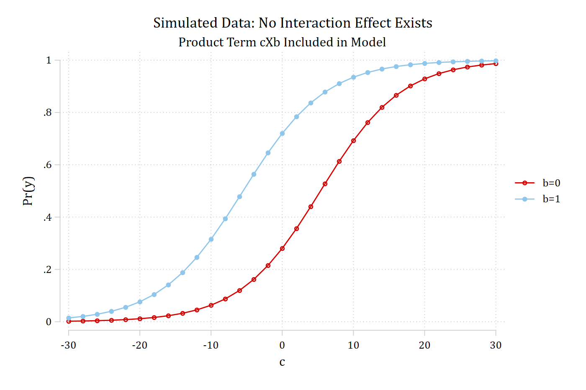
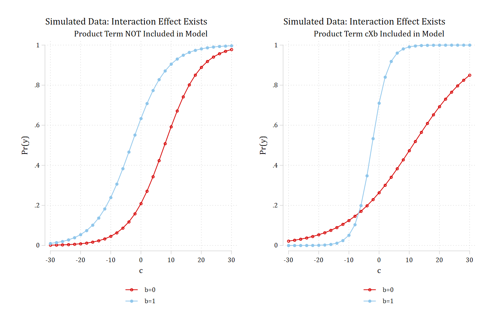
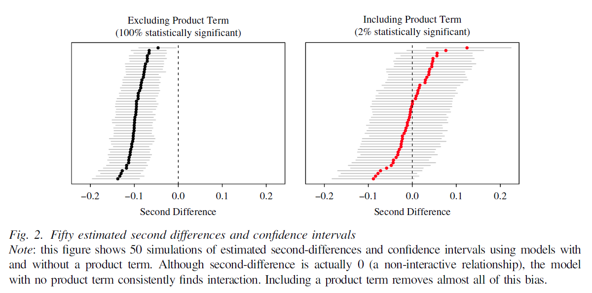
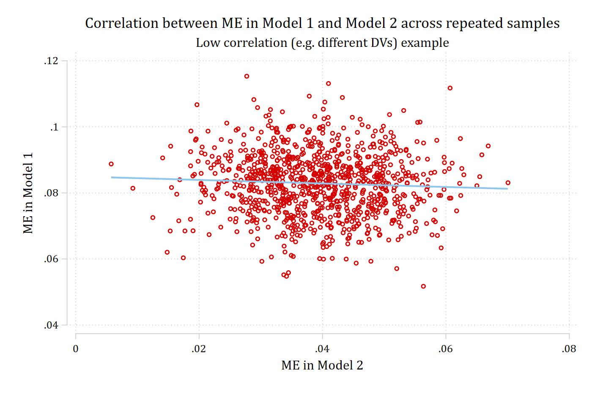
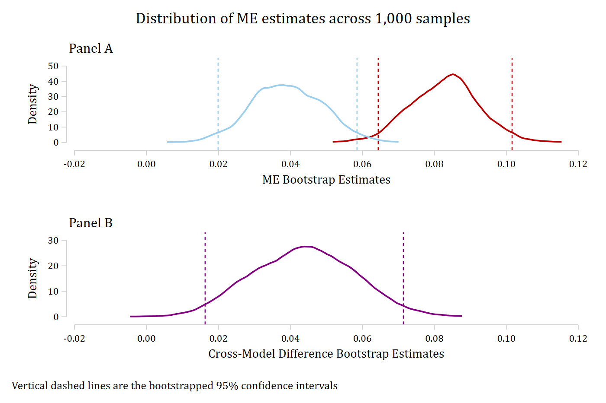
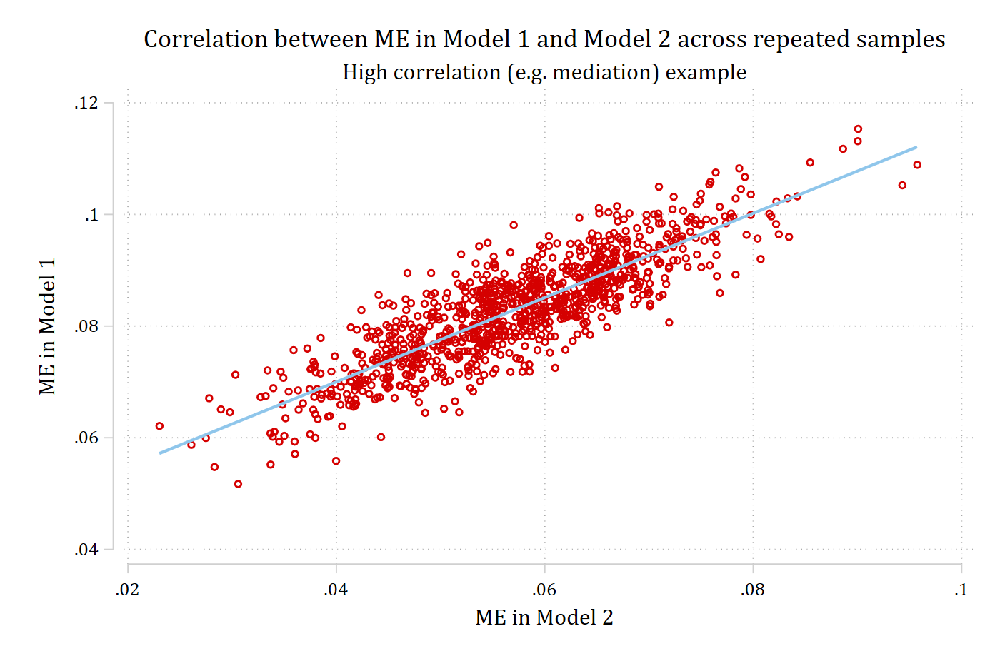
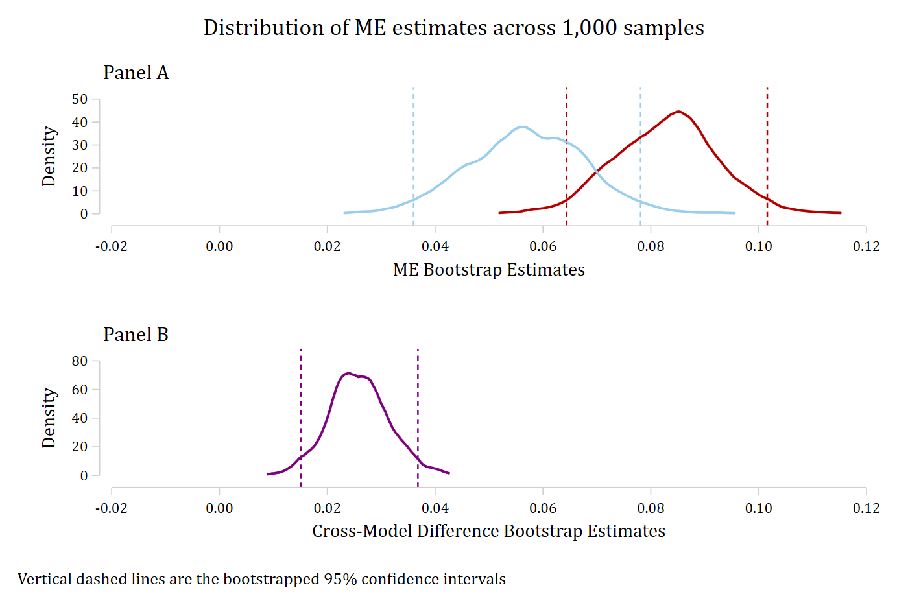

Appendix A7: Stata Code and Tips
- For all sets of lecture notes, there is an accompanying replication Stata do-file (available here or on Brightspace)
- This includes all of the Stata code necessary to recreate anything in the slides
- In this Appendix, I include some comments, notes, and examples for things that are new or that might be hard to follow without more detail
- For more streamlined, less complicated, and more notated do-files showing the basics of the types of analyses covered in this section:
- For tests of interactions in nonlinear models, I recommend the template Stata do-files that accompany the Mize 2019 Sociological Science article
- For comparing effects across models, I recommend the template Stata do-files in the mecompare package that accompanies the Mize, Doan, and Long 2019 Sociological Methodology article
A7.1 Is the interaction (product) term necessary?
- There has been an intense debate in the methodological literature as to whether it is appropriate to discuss interaction effects absent an interaction (product) term in the model
- E.g. When “compression” of the effects is theoretically reasonable (especially within political science)
Deep Questions:
Imagine a case where compression is theoretically reasonable and fits the data: what are the consequences of including an interaction (product) term in the model?
Imagine a case where compression is not theoretically reasonable and does not fit the data: what are the consequences of not including an interaction (product) term in the model?
Effect of unneeded product term in model
Below, I generated data where an interaction effect does not exist in the data generating process
*Simulate data to show effect of unneeded product term
clear
set seed 30004
set obs 2000Number of observations (_N) was 0, now 2,000.matrix P = (1, 0.2 \ 0.2, 1) // Small correlation
corr2data x1 x2, n(2000) cov(P)
gen c = rnormal(0,10)
gen b = c
replace b = 0 in 1/1000(1,000 real changes made)replace b = 1 in 1001/2000(1,000 real changes made)gen cXb = c*b
gen y = uniform() < invlogit(-1 + 0.2*(c) + 2*(b) + 0*cXb)
qui logit y c.c##i.b x1 x2
qui margins, at(c=(-30(2)30) b=(0 1))
marginsplot, xlab(-30(10)30) noci ///
title("Simulated Data: No Interaction Effect Exists", size(medium)) ///
subtitle("Product Term cXb Included in Model")Variables that uniquely identify margins: c b
Product terms in logit/probit
- In the example above, I generated data where the interaction effect = 0 in the data generating process. What did we lose by including a product term when it is not needed? One degree of freedom—and nothing else
- If compression fits the data, you will find it even with a product term in the model (because the coefficient on the interaction (product) term will be ≈ 0 and have no effect on the predictions)
- However, omitting an interaction (product) term effectively constrains the interaction effect to be zero (recall likelihood ratio test logic)
- Without the interaction (product) term you force the overall slopes of the logit curves to be invariant across the levels of the second IV
- What about testing for an interaction effect (in terms of the predictions) without a product term in the model?
- Below, the plots show logit models on data I generated where an interaction effect does exist in the data generating process
Effect of omitting needed product term in model
clear
set seed 30004
set obs 2000Number of observations (_N) was 0, now 2,000.matrix P = (1, 0.2 \ 0.2, 1) // Small correlation
corr2data x1 x2, n(2000) cov(P)
gen c = rnormal(0,10)
gen b = c
replace b = 0 in 1/1000(1,000 real changes made)replace b = 1 in 1001/2000(1,000 real changes made)gen cXb = c*b
gen y = uniform() < invlogit(-1 + 0.1*(c) + 2*(b) + 0.3*cXb)
qui logit y c.c##i.b x1 x2
qui margins, at(c=(-30(2)30) b=(0 1))
marginsplot, xlab(-30(10)30) noci ///
title("Simulated Data: Interaction Effect Exists", size(medium)) ///
subtitle("Product Term cXb Included in Model") ///
legend(position(6)) saving(int, replace)Variables that uniquely identify margins: c b
file int.gph savedqui logit y c.c i.b x1 x2
qui margins, at(c=(-30(2)30) b=(0 1))
marginsplot, xlab(-30(10)30) noci ///
title("Simulated Data: Interaction Effect Exists", size(medium)) ///
subtitle("Product Term NOT Included in Model") ///
legend(position(6)) saving(noint, replace)Variables that uniquely identify margins: c b
file noint.gph savedgraph combine noint.gph int.gph
Type I errors and product terms in logit/probit
The figure below reports simulation results for a model where an interaction should not exist. The product term is necessary to allow the effect to not be interactive. Without the product term Type I error rates are disturbingly high

Figure from Rainey 2016 PSRM
A7.2 Options for testing 2nd differences
Simplifying tests of 2nd differences with dydx( )
- The dydx( ) option on mtable will report the average instantaneous change for continuous variables; the average 0 vs 1 effect for binary variables
- Because this is a marginal change (first derivative) for continuous variables, you cannot say “for a one unit increase” or similar—instead, I interpret it as the effect “on average” (i.e. it is the average slope of love for each group)
- Instead of the arbitrary 4 and 8 I choose above for the discrete change could choose to use mean as starting value for a MEM. E.g.
- Start value of the mean
- Ending value of:
- Mean +1
- Mean + SD
- Etc.
Second differences with discrete change average marginal effects
- The margins syntax for discrete changes is clunkier (hence why mchange was written). But need to know it for tests of second differences which require using margins
- To get a prediction at the observed value (i.e. the start value) put in the at( ) statement var=gen(var)
- For a prediction at an ending value simply add the number onto the end, e.g. var=gen(var + #)
- Put these two predictions (start and end value) in separate at( ) statements alongside the values of the nominal IV you want. E.g.
margins, at(cond=(1 3) love10=gen(love10)) ///
at(cond=(1 3) love10=gen(love10 + 1))- This produces the four predictions you need for a +1 AME of love; one for heterosexuals (cond = 1) and one for lesbians (cond = 3)
use "https://tdmize.github.io/data/data/doan_love_SF", clear(TESS03 - Analysis Dataset for TESS01 - Main Paper)qui reg informal i.cond##c.love10 rfem age rce_wht ed_coll ///
ed_hs inc_50k married childyn children ideo evangel ///
mainline blackprot catholic ofaithV2
est store inform
*How to get AMEs from margins; the secret var=gen(var) method
margins, at(cond=(1 3) love10=gen(love10)) ///
at(cond=(1 3) love10=gen(love10 + 1))Predictive margins Number of obs = 499
Model VCE: OLS
Expression: Linear prediction, predict()
1._at: cond = 1
love10 = love10
2._at: cond = 3
love10 = love10
3._at: cond = 1
love10 = love10 + 1
4._at: cond = 3
love10 = love10 + 1
------------------------------------------------------------------------------
| Delta-method
| Margin std. err. t P>|t| [95% conf. interval]
-------------+----------------------------------------------------------------
_at |
1 | 9.150 0.187 49.035 0.000 8.784 9.517
2 | 6.742 0.196 34.466 0.000 6.358 7.126
3 | 9.587 0.198 48.310 0.000 9.197 9.976
4 | 7.267 0.204 35.698 0.000 6.867 7.667
------------------------------------------------------------------------------Now, can use mlincom as above to calculate the MEs
A7.3 Plotting the “other side” of the interaction
- The examples above focus mostly on the effect of love. It is also important to examine the effect of the sexual orientation of the couple (we did this in the linear regression section of the course). Syntax is identical for logit/probit, use:
margins, dydx(nominalvar)
marginsplot- Note I’ve excluded the lesbian couple from the model to make it easier to plot just gay men vs heterosexual couple on the graph:
logit Bmarry i.cond##c.love10 … if cond != 3, or- Including a line at zero with yline(0) helps interpret the plot. Remember to always include a subtitle or a note explaining how to interpret the plot:
qui margins, dydx(cond) at(love=(0(0.5)10))
marginsplot, recastci(rline) ciopts(lpat(dash)) yline(0) ///
subtitle("Effects Below Zero Indicate Lower Support for Gay Couple's Marriage Rights") ///
… options …A7.4 Nominal X nominal interactions
Bar charts of predictions with coefplot
- marginsplot is limited for bar charts; the user-written command coefplot is a more flexible choice
- See more examples of what the wondrous coefplot can do here
- In order to get the spacing of the bars correct and to get different colors to indicate groups, you must make two sets of predictions using margins and store them; then, use coefplot to plot the predictions
- I recommend copying the options I have below for a well laid out bar chart—and then adapt to your needs
est restore alcmod
qui margins, at(parrole=(0 1) woman=(0)) post
est store prmen
est restore alcmod
qui margins, at(parrole=(0 1) woman=(1)) post
est store prwom
coefplot prmen prwom, ///
recast(bar) vertical barw(0.3) ciopts(recast(rcap) color(gs10)) citopcoefplot with nominal IVs
- Procedure is the same to make a bar chart with coefplot when you have a nominal IV with > 2 categories—you just need to specify the categories for prediction with margins
- A helpful bit of my code below: to have your labels on multiple lines so that they will be readable, put each line in quotations ” “—and enclose the entire text of the label in compound quotes `” text goes here “’
- E.g. See how I have specified the label High School below
- A helpful bit of my code below: to have your labels on multiple lines so that they will be readable, put each line in quotations ” “—and enclose the entire text of the label in compound quotes `” text goes here “’
*Bar chart with SE bars
est restore alcedmod
qui margins, at(educ=(0(1)4) woman=(0)) post
est store prmen
est restore alcedmod
qui margins, at(educ=(0(1)4) woman=(1)) post
est store prwom
coefplot prmen prwom, ///
recast(bar) vertical barw(0.3) ciopts(recast(rcap) color(gs10)) ///
citop level(68) ylab(0(.1)1) legend(order(1 "Men" 3 "Women")) ///
xlab(1 `" "No HS" "Degree" "' 2 `" "High" "School" "' ///
3 `" "Some" "College" "' 4 `" "College" "Degree" "' 5 `" "Graduate" "Degree" "') ///
… titles …Testing nominal X nominal interactions (multi-category IVs)
use "https://tdmize.github.io/data/data/addhealth4", clear(addhealth4_dmv.dta | Add Health Wave IV | DMV Workshop)qui logit alcB i.educ##i.woman c.age i.race c.income, or
estimates store alcedmod
*Predictions
mtable, at(woman=(0 1) educ=(0(1)4)) postExpression: Pr(alcB), predict()
| educ woman Pr(y)
----------+-----------------------------
1 | 0 0 0.605
2 | 0 1 0.317
3 | 1 0 0.631
4 | 1 1 0.527
5 | 2 0 0.685
6 | 2 1 0.549
7 | 3 0 0.704
8 | 3 1 0.642
9 | 4 0 0.738
10 | 4 1 0.611
Specified values where .n indicates no values specified with at()
| No at()
----------+---------
Current | .n*Gender gap for no high school
mlincom 6 - 1, stat(est se p) | lincom se pvalue
-------------+-----------------------------
1 | -0.056 0.044 0.199 Nominal X Nominal Interactions (Multi-category IVs)
- An easier way to automate calculating all of the gender gaps is to ask for the effect of gender via dydx( ) and to request these to be estimated at each level of education:
*Gender gaps across educational groups
est restore alcedmod(results alcedmod are active now)mtable, dydx(woman) at(educ=(0(1)4)) stat(est se p)Expression: Pr(alcB), predict()
| educ d Pr(y) se p
----------+---------------------------------------
1 | 0 -0.288 0.061 0.000
2 | 1 -0.104 0.035 0.003
3 | 2 -0.136 0.023 0.000
4 | 3 -0.062 0.029 0.033
5 | 4 -0.126 0.048 0.008
Specified values where .n indicates no values specified with at()
| No at()
----------+---------
Current | .n*Test all contrasts
est restore alcedmod
margins, dydx(woman) at(educ=(0(1)4)) pwcompare(pve)*The pwcompare(pve) option will calculate all of the pairwise comparisons—i.e. the difference in the effect of gender across each education category. The output is long and messy, but this does a lot of work for you
A7.5 Continuous X continuous interactions
Marginal effects plots
- You can make ME plots with a continuous X continuous interaction in the same way you do it for a nominal X continuous
- Note using the dydx( ) option is the simple way to do this—though it gives you a marginal change rather than a discrete change so the interpretation isn’t as satisfying
qui margins, dydx(conviewSS) at(year1972=(1(1)52))
marginsplot, … options …
qui margins, dydx(year1972) at(conviewSS=(1(.5)7))
marginsplot, … options …Contour plots
- One of the primary difficulties of interpreting continuous X continuous interactions is thinking in two dimensions
- Contour plots present the Pr(y = 1) at the intersection of the two continuous variables included in the interaction
- Making the plots is a little different than a marginsplot
- First, make the predictions with margins and save the predictions as a new dataset with the saving( ) option
- margins will calculate all of the combinations of each level of your IVs
use "https://tdmize.github.io/data/data/cda_gss24", clear(GSS 1972-2024 CDA - Categorical Data Analysis | 2024-12-03)drop if missing(sameokB, year1972, conviewSS, age, race3, ///
woman, faminc, married, college)(37,893 observations deleted)qui logit sameokB c.year1972##c.year1972##c.conviewSS c.age i.race3 ///
i.woman c.faminc i.married i.college, nolog or
*Make predictions at all combinations of both continuous IVs
qui margins, at(conviewSS=(1(.5)7) year1972=(1(1)52)) ///
saving(preds, replace)- The predictions are saved with unhelpful names for the new variables such as _at1 and _at2—the easiest way to know for sure what these are is to look at them when you load the new dataset of predictions
- Note that margins names these based on the order of the IVs in the original regression model; it sets the values to missing for the other IVs in the model that were not specified in the margins command
Continuous X Continuous Interactions—Contour Plots
- Load the dataset of predictions
- Run codebook, compact immediately after loading the dataset of predictions
*Load dataset of predictions
use preds, clear(Created by command margins; also see char list)*Examine variables; rename vars to be plotted
codebook, cVariable Obs Unique Mean Min Max Label
--------------------------------------------------------------------------------
_deriv 0 0 . . . Derivatives w.r.t.
_term 676 1 1 1 1 Margin term index
_predict 0 0 . . . predict() option index
_at 676 676 338.5 1 676 Covariates fixed values...
_atopt 676 1 1 1 1 at() option index
_margin 676 676 .3142219 .0648411 .8933834 Pr(sameokB), predict()
_se_margin 676 676 .0050853 .002525 .0130976 Standard error
_statistic 676 676 61.67418 9.668413 144.0299 z-statistic
_pvalue 676 10 6.08e-25 0 4.11e-22 P>|z|
_ci_lb 676 676 .304255 .0537794 .88116 95% Confidence interval...
_ci_ub 676 676 .3241888 .0723443 .9056068 95% Confidence interval...
_at1 676 52 26.5 1 52 Years since 1972
_at2 676 13 4 1 7 Lib to Cons politics scale
_at3 0 0 . . . Age of respondent
_at4 0 0 . . . Race of respondent
_at5 0 0 . . . Woman R
_at6 0 0 . . . Family Income in 1000s
_at7 0 0 . . . Currently Married
_at8 0 0 . . . R Has College Degree
--------------------------------------------------------------------------------Making contour plots in Stata
- Double-check the variables you will plot by looking at them with list
list _at1 _at2 _margin in 1/10 +--------------------------------+
| _at1 _at2 _margin |
|--------------------------------|
1. | 1 Most liberal .1901978 |
2. | 1 1.5 .1758679 |
3. | 1 2 .1623425 |
4. | 1 2.5 .1496135 |
5. | 1 3 .1376677 |
|--------------------------------|
6. | 1 3.5 .126487 |
7. | 1 Middle .1160495 |
8. | 1 4.5 .1063299 |
9. | 1 5 .0972999 |
10. | 1 5.5 .0889295 |
+--------------------------------+- Rename the variables to prevent mistakes when plotting:
rename _at1 year1972
rename _at2 conviewSS
rename _margin pr_sameokMaking contour plots in Stata
- Make the plot using twoway contour
- Syntax: (1) variable with the predictions comes first, (2) followed by the IV you want on the x-axis, then (3) the IV you want on the y-axis
- scolor( ) specifies what the starting color should be; ecolor( ) the ending color; all colors between the two are plotted
- The default is to plot each color between the two with crule(hue)
- To get gradations instead, use crule(linear)
- For rainbow plots, use scolor(red) ecolor(purple) [or scolor(purple) ecolor(red)] and the default crule(hue)
- For grayscale plots use scolor(gs16) ecolor(black) [or scolor(black) ecolor(gs16)] and crule(linear)
- The default is to plot each color between the two with crule(hue)
- ccuts(start(gap)end) specifies what levels of the predicted probabilities to show as different colors
- Alternatively, you can specify the number of levels to divide evenly among the range of probabilities in the data with levels(#) where the max # of levels is 500
- Especially useful for the smoothed rainbow plots
- Alternatively, you can specify the number of levels to divide evenly among the range of probabilities in the data with levels(#) where the max # of levels is 500
Making contour plots in Stata
- This is the base of the command that made all of the plots shown in these notes
twoway (contour pr_sameok conviewSS year1972, ccuts(0(0.05)1.0)) … options …- Some example options you can try:
twoway (contour pr_sameok conviewSS year1972, ccuts(0(0.05)1.0) ///
scolor(gs16) ecolor(black) crule(linear)) … options …
twoway (contour pr_sameok conviewSS year1972, ccuts(0(0.05)1.0) ///
scolor(black) ecolor(gs16) crule(linear)) … options …
twoway (contour pr_sameok conviewSS year1972, ccuts(0(0.05)1.0) ///
scolor(red) ecolor(purple)) … options …
twoway (contour pr_sameok conviewSS year1972, ccuts(0(0.05)1.0) ///
scolor(purple) ecolor(red)) … options …
twoway (contour pr_sameok conviewSS year1972, levels(500) ///
scolor(red) ecolor(purple)) … options …A7.7 Which observations do I use for predictions and MEs?
Using over( ) with nominal IVs to select observations
- The default for margins/mtable/mchange is to make predictions for all observations in the sample at specified values of the IVs (with controls at observed values) and then average the predictions
- To select only the observations specific to a nominal group, use the over( ) option
- This specifies that predictions/MEs be calculated separately across the observations at each level of the over( ) variable
- E.g. over(woman) makes predictions for women = 1 using only the observations for women; women = 0 using only the observations for men
use "https://tdmize.github.io/data/data/addhealth4", clear(addhealth4_dmv.dta | Add Health Wave IV | DMV Workshop)qui logit depB c.role##i.woman i.race i.college c.hhincome
margins, dydx(role) at(woman=(0 1))Average marginal effects Number of obs = 4,307
Model VCE: OIM
Expression: Pr(depB), predict()
dy/dx wrt: role
1._at: woman = 0
2._at: woman = 1
------------------------------------------------------------------------------
| Delta-method
| dy/dx std. err. z P>|z| [95% conf. interval]
-------------+----------------------------------------------------------------
role |
_at |
1 | -0.036 0.005 -6.839 0.000 -0.046 -0.026
2 | -0.029 0.007 -4.349 0.000 -0.041 -0.016
------------------------------------------------------------------------------This method uses all observations in the sample—both men and women—for each ME calculation
margins, dydx(role) over(woman)Average marginal effects Number of obs = 4,307
Model VCE: OIM
Expression: Pr(depB), predict()
dy/dx wrt: role
Over: woman
------------------------------------------------------------------------------
| Delta-method
| dy/dx std. err. z P>|z| [95% conf. interval]
-------------+----------------------------------------------------------------
role |
woman |
Man | -0.037 0.005 -6.687 0.000 -0.047 -0.026
Woman | -0.028 0.006 -4.382 0.000 -0.041 -0.016
------------------------------------------------------------------------------This method uses only the group specific observations (men or women) for each ME calculation
A7.8 Tests of mediation
- For the classic tests of mediation there are three options in Stata
- Use the user-written command sgmediation2
- *Originally written by Phil Ender; I now maintain and support the command (see the description here)
- Fit the models separately and calculate the Sobel test yourself using the formulas in these notes
- Estimate the models simultaneously as using structural equation modeling (SEM)
- Use the user-written command sgmediation2
- The user-written command sgmediation2 will do the test of the indirect effect for you (Sobel test). The syntax is:
- DV listed before comma
- Mediating variable listed in option mv( )
- Independent variable of interest listed in option iv( )
- Control variables listed in option cv( )
sgmediation2 depscale, mv(wages) iv(edyrs)Statistical mediation: linear regression example
sgmediation2 depscale, mv(wages) iv(edyrs)Model with dv regressed on iv (path c)
regress depscale edyrs , vce()
Source | SS df MS Number of obs = 4,307
-------------+---------------------------------- F(1, 4305) = 108.52
Model | 22.0288344 1 22.0288344 Prob > F = 0.0000
Residual | 873.92287 4,305 .203001828 R-squared = 0.0246
-------------+---------------------------------- Adj R-squared = 0.0244
Total | 895.951704 4,306 .20807053 Root MSE = .45056
------------------------------------------------------------------------------
depscale | Coefficient Std. err. t P>|t| [95% conf. interval]
-------------+----------------------------------------------------------------
edyrs | -0.032 0.003 -10.417 0.000 -0.038 -0.026
_cons | 1.043 0.045 23.340 0.000 0.956 1.131
------------------------------------------------------------------------------
Model with mediator regressed on iv (path a)
regress wages edyrs , vce()
Source | SS df MS Number of obs = 4,307
-------------+---------------------------------- F(1, 4305) = 148.22
Model | 74140.5856 1 74140.5856 Prob > F = 0.0000
Residual | 2153341.01 4,305 500.195357 R-squared = 0.0333
-------------+---------------------------------- Adj R-squared = 0.0331
Total | 2227481.6 4,306 517.297166 Root MSE = 22.365
------------------------------------------------------------------------------
wages | Coefficient Std. err. t P>|t| [95% conf. interval]
-------------+----------------------------------------------------------------
edyrs | 1.845 0.152 12.175 0.000 1.548 2.142
_cons | -8.770 2.218 -3.953 0.000 -13.120 -4.421
------------------------------------------------------------------------------
Model with dv regressed on mediator and iv (paths b and c')
regress depscale wages edyrs , vce()
Source | SS df MS Number of obs = 4,307
-------------+---------------------------------- F(2, 4304) = 68.58
Model | 27.6703625 2 13.8351812 Prob > F = 0.0000
Residual | 868.281342 4,304 .20173823 R-squared = 0.0309
-------------+---------------------------------- Adj R-squared = 0.0304
Total | 895.951704 4,306 .20807053 Root MSE = .44915
------------------------------------------------------------------------------
depscale | Coefficient Std. err. t P>|t| [95% conf. interval]
-------------+----------------------------------------------------------------
wages | -0.002 0.000 -5.288 0.000 -0.002 -0.001
edyrs | -0.029 0.003 -9.309 0.000 -0.035 -0.023
_cons | 1.029 0.045 23.053 0.000 0.941 1.116
------------------------------------------------------------------------------
Sobel-Goodman Mediation Tests
| Est Std_err z P>|z|
---------------------+-----------------------------------------------
Sobel | -0.003 0.001 -4.850 0.000
Aroian | -0.003 0.001 -4.837 0.000
Goodman | -0.003 0.001 -4.864 0.000
Indirect, Direct, and Total Effects
| Est Std_err z P>|z|
---------------------+-----------------------------------------------
a_coefficient | 1.845 0.152 12.175 0.000
b_coefficient | -0.002 0.000 -5.288 0.000
Indirect_effect_aXb | -0.003 0.001 -4.850 0.000
Direct_effect_c' | -0.029 0.003 -9.309 0.000
Total_effect_c | -0.032 0.003 -10.417 0.000
Proportion of total effect that is mediated: 0.094
Ratio of indirect to direct effect: 0.104
Ratio of total to direct effect: 1.104Education’s effect on depressive symptoms is partially mediated by the effect of wages. The effect of education is reduced by about 9% after accounting for the effect of wages (p < 0.001)
A7.9 The khb command to test for mediation
- The khb command provides tests of mediation. In logit/probit, the coefficient is decomposed to account for the rescaling across models
khb logit depB c.edyrs || c.wages, summaryDecomposition using the KHB-Method
Model-Type: logit Number of obs = 4307
Variables of Interest: edyrs Pseudo R2 = 0.02
Z-variable(s): wages
------------------------------------------------------------------------------
depB | Coefficient Std. err. z P>|z| [95% conf. interval]
-------------+----------------------------------------------------------------
edyrs |
Reduced | -0.146 0.017 -8.580 0.000 -0.180 -0.113
Full | -0.119 0.018 -6.781 0.000 -0.153 -0.084
Diff | -0.028 0.006 -4.252 0.000 -0.040 -0.015
------------------------------------------------------------------------------
Summary of confounding
Variable | Conf_ratio Conf_Pct Resc_Fact
-------------+-------------------------------------
edyrs | 1.2319681 18.83 1.036583
---------------------------------------------------The khb method to test for mediation
- Option ape reports average partial effects (unfortunately, yet another name for the instantaneous change; i.e. first derivatives)
khb logit depB c.edyrs || c.wages, summary apeDecomposition using the APE-Method
Model-Type: logit Number of obs = 4307
Variables of Interest: edyrs Pseudo R2 = 0.02
Z-variable(s): wages
------------------------------------------------------------------------------
depB | Coefficient Std. err. z P>|z| [95% conf. interval]
-------------+----------------------------------------------------------------
edyrs |
Reduced | -0.025 0.003 -8.764 0.000 -0.031 -0.020
Full | -0.021 0.003 -6.875 0.000 -0.027 -0.015
Diff | -0.005 . . . . .
------------------------------------------------------------------------------
Note: Standard errors of difference not known for APE method
Summary of confounding
Variable | Conf_ratio Conf_Pct Dist_Sens
-------------+-------------------------------------
edyrs | 1.2319681 18.83 1.0309895
---------------------------------------------------- Now we have effects in a metric that is somewhat helpful (marginal effect for the instantaneous change)—but we can’t get a statistical test of whether the effect is different across models
A7.10 Illustration of the impact of the cross-model covariance
- What is the impact of assuming the cross-model covariance is zero when it is non-zero? Two examples (N = 2,000 for both examples):
- Ex 1: Effect of \(x_{1}\) across binary DVs \(y_{1}\) and \(y_{2}\)
- Ex 2: Effect of \(x_{1}\) on binary DV \(y_{1}\) in model with and without \(x_{2}\)
- In what follows, comparing z, \(z'\), and zbs which is the z-statistic from 1,000 bootstrapped samples
- Bootstrapping works by randomly sampling from within a sample many (1,000) times and estimating the model parameter each time
- Illustrating logic of what we would expect over repeated samples
- The mean of the bootstrapped samples is the bootstrapped β; the middle 95% of those 1,000 bootstrapped samples the bootstrapped confidence intervals
- Bootstrapping works by randomly sampling from within a sample many (1,000) times and estimating the model parameter each time
- In addition to the graphs below, see the logic via GIFs here!
*NOTE: These exs are extensions of those in Mize, Doan, and Long 2019 SM
clear
set seed 30004
set obs 2000Number of observations (_N) was 0, now 2,000.matrix P = (1, 0.5 \ 0.5, 1)
corr2data x1 x2, n(2000) cov(P)
gen y1 = uniform() < invlogit(-1 + 0.4*(x1) + 0.2*(x2))
gen y2 = uniform() < invlogit(-1 + 0.2*(x1))
save a7-sim_data, replacefile a7-sim_data.dta saved////////////////////////////////////////
// Low covariance; e.g. different DVs //
////////////////////////////////////////
// Bootstrap the individual and cross-model differences //
capture program drop bs_crossmod
program define bs_crossmod, rclass 1. logit y1 x1
2. margins, dydx(x1) post
3. mat temp1 = r(table)
4. scalar me_mod1 = temp1[1,1]
5.
. logit y2 x1
6. margins, dydx(x1) post
7. mat temp2 = r(table)
8. scalar me_mod2 = temp2[1,1]
9.
. scalar diff = temp1[1,1] - temp2[1,1]
10. endbootstrap me_mod1 me_mod2 diff, saving(bs_ests-01-two_DVs, replace) ///
reps(1000) seed(6095) cformat(%6.4f) nodots: bs_crossmodBootstrap results Number of obs = 2,000
Replications = 1,000
Command: bs_crossmod
_bs_1: me_mod1
_bs_2: me_mod2
_bs_3: diff
------------------------------------------------------------------------------
| Observed Bootstrap Normal-based
| coefficient std. err. z P>|z| [95% conf. interval]
-------------+----------------------------------------------------------------
_bs_1 | 0.0830 0.0095 8.754 0.000 0.0644 0.1016
_bs_2 | 0.0392 0.0098 3.981 0.000 0.0199 0.0585
_bs_3 | 0.0438 0.0140 3.122 0.002 0.0163 0.0714
------------------------------------------------------------------------------*Load the dataset of the bootstrapped estimates
use bs_ests-01-two_DVs, clear(bootstrap: bs_crossmod)rename _bs_1 me_mod1
rename _bs_2 me_mod2
rename _bs_3 diff
corr me*, cov(obs=1,000)
| me_mod1 me_mod2
-------------+------------------
me_mod1 | .00009
me_mod2 | -5.2e-06 .000097corr me*(obs=1,000)
| me_mod1 me_mod2
-------------+------------------
me_mod1 | 1.0000
me_mod2 | -0.0555 1.0000twoway ///
scatter me_mod1 me_mod2 || ///
lfit me_mod1 me_mod2, lwid(medthick) legend(off) ///
ytitle("ME in Model 1") xtitle("ME in Model 2") ///
subtitle("Low correlation (e.g. different DVs) example") ///
title("Correlation between ME in Model 1 and Model 2 across repeated sampl
es")
twoway kdensity me_mod1, lwid(medthick) lcol(red*1.4) || ///
kdensity me_mod2, lwid(medthick) lcol(eltblue*.8) || , ///
xlab(-.02(.02).12, format(%3.2f) nogrid) ylab(, nogrid) ///
xtitle("ME Bootstrap Estimates") ///
xline(0.0644, lcol(red*1.4) lwid(medium)) ///
xline(0.1016, lcol(red*1.4) lwid(medium)) ///
xline(0.0199, lcol(eltblue*.8) lwid(medium)) ///
xline(0.0585, lcol(eltblue*.8) lwid(medium)) ///
ytitle("Density") title("Panel A", pos(11)) ///
scale(*1.2) legend(off) name(bs_mes, replace)
twoway kdensity diff, lcol(purple) lwid(medthick) ///
xlab(-.02(.02).12, format(%3.2f) nogrid) ylab(, nogrid) ///
xtitle("Cross-Model Difference Bootstrap Estimates") ///
xline(0.0163, lcol(purple) lwid(medium)) ///
xline(0.0714, lcol(purple) lwid(medium)) ///
ytitle("Density") title("Panel B", pos(11)) ///
scale(*1.2) name(bs_diff, replace)
graph combine bs_mes bs_diff, row(2) ///
title("Distribution of ME estimates across 1,000 samples") ///
note("Vertical dashed lines are the bootstrapped 95% confidence intervals"
)
This is Ex 1: the bootstrapped estimates of ME1 and ME2 correlate at -0.056. Similarly, covariance estimated by SUEST is very small and negative
\[z_{bs} = 3.12 \qquad z = 3.09 \qquad z' = 3.16\]
////////////////////////////////////////
// High covariance; e.g. mediation //
////////////////////////////////////////
// Bootstrap the individual and cross-model differences //
use a7-sim_data, clear
capture program drop bs_crossmod
program define bs_crossmod, rclass 1. logit y1 x1
2. margins, dydx(x1) post
3. mat temp1 = r(table)
4. scalar me_mod1 = temp1[1,1]
5.
. logit y1 x1 x2
6. margins, dydx(x1) post
7. mat temp2 = r(table)
8. scalar me_mod2 = temp2[1,1]
9.
. scalar diff = temp1[1,1] - temp2[1,1]
10. endbootstrap me_mod1 me_mod2 diff, saving(bs_ests-02-med, replace) ///
reps(1000) seed(6095) cformat(%6.4f) nodots: bs_crossmodBootstrap results Number of obs = 2,000
Replications = 1,000
Command: bs_crossmod
_bs_1: me_mod1
_bs_2: me_mod2
_bs_3: diff
------------------------------------------------------------------------------
| Observed Bootstrap Normal-based
| coefficient std. err. z P>|z| [95% conf. interval]
-------------+----------------------------------------------------------------
_bs_1 | 0.0830 0.0095 8.754 0.000 0.0644 0.1016
_bs_2 | 0.0571 0.0108 5.300 0.000 0.0360 0.0781
_bs_3 | 0.0260 0.0056 4.675 0.000 0.0151 0.0368
------------------------------------------------------------------------------*Load the dataset of the bootstrapped estimates
use bs_ests-02-med, clear(bootstrap: bs_crossmod)rename _bs_1 me_mod1
rename _bs_2 me_mod2
rename _bs_3 diff
corr me*, cov(obs=1,000)
| me_mod1 me_mod2
-------------+------------------
me_mod1 | .00009
me_mod2 | .000087 .000116corr me*(obs=1,000)
| me_mod1 me_mod2
-------------+------------------
me_mod1 | 1.0000
me_mod2 | 0.8570 1.0000twoway ///
scatter me_mod1 me_mod2 || ///
lfit me_mod1 me_mod2, lwid(medthick) legend(off) ///
ytitle("ME in Model 1") xtitle("ME in Model 2") ///
subtitle("High correlation (e.g. mediation) example") ///
title("Correlation between ME in Model 1 and Model 2 across repeated sampl
es")
twoway kdensity me_mod1, lwid(medthick) lcol(red*1.4) || ///
kdensity me_mod2, lwid(medthick) lcol(eltblue*.8) || , ///
xlab(-.02(.02).12, format(%3.2f) nogrid) ylab(, nogrid) ///
xtitle("ME Bootstrap Estimates") ///
xline(0.0644, lcol(red*1.4) lwid(medium)) ///
xline(0.1016, lcol(red*1.4) lwid(medium)) ///
xline(0.0360, lcol(eltblue*.8) lwid(medium)) ///
xline(0.0781, lcol(eltblue*.8) lwid(medium)) ///
ytitle("Density") title("Panel A", pos(11)) legend(off) ///
scale(*1.2) name(bs_mes, replace)
twoway kdensity diff, lcol(purple) lwid(medthick) ///
xlab(-.02(.02).12, format(%3.2f) nogrid) ylab(, nogrid) ///
xtitle("Cross-Model Difference Bootstrap Estimates") ///
xline(0.0151, lcol(purple) lwid(medium)) ///
xline(0.0368, lcol(purple) lwid(medium)) ///
ytitle("Density") title("Panel B", pos(11)) ///
scale(*1.2) name(bs_diff, replace)
graph combine bs_mes bs_diff, row(2) ///
title("Distribution of ME estimates across 1,000 samples") ///
note("Vertical dashed lines are the bootstrapped 95% confidence intervals"
)
This is for Ex 2: the bootstrapped estimates of ME1 and ME2 correlate at 0.857. Similarly, covariance estimated by SUEST is large and positive
\[z_{bs} = 4.68 \qquad z = 4.69 \qquad z' = 1.78\]